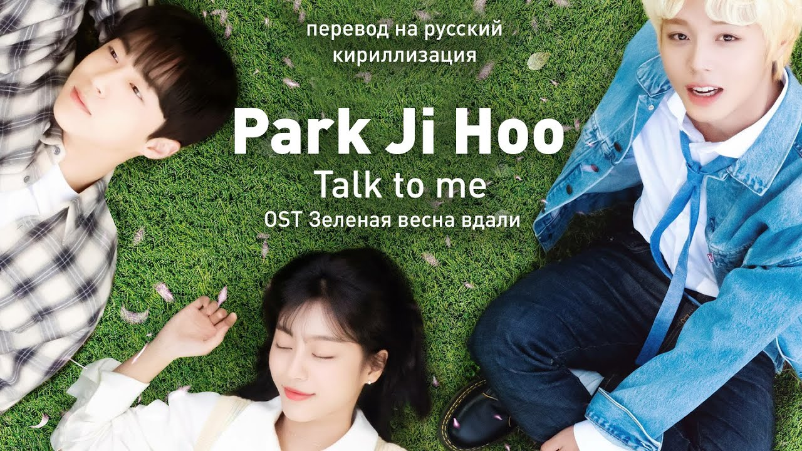

Зелёная весна вдали

Жанр: Драма, Повседневность, Романтика
Сериал: 12 серий
Сюжет:
Для Ё Джуна нет ничего сложного в том, чтобы завести друзей, достаточно просто всегда улыбаться, и никто никогда не догадается, что скрывает эта улыбка. Однако с сонбэ, который никогда никому не улыбается, это не сработало. Нам Су Хён не знает, что такое свободное время или отношения, ведь когда ты еле-еле сводишь концы с концами, это непозволительная роскошь. Ким Со Бин отдала все время учебе, однако приложенных ею усилий оказалось недостаточно, и теперь ее будущее под вопросом. Весь мир твердит им, что молодость — зеленая весна жизни, однако каждый из них видит ее через призму собственных проблем, не решаясь отпустить свой багаж прошлого. Однако теперь они возможно получили шанс, на который и не рассчитывали, встретить настоящую дружбу, способную залечить любые раны.
ВНИМАНИЕ!
Сайт сделан с любовью!